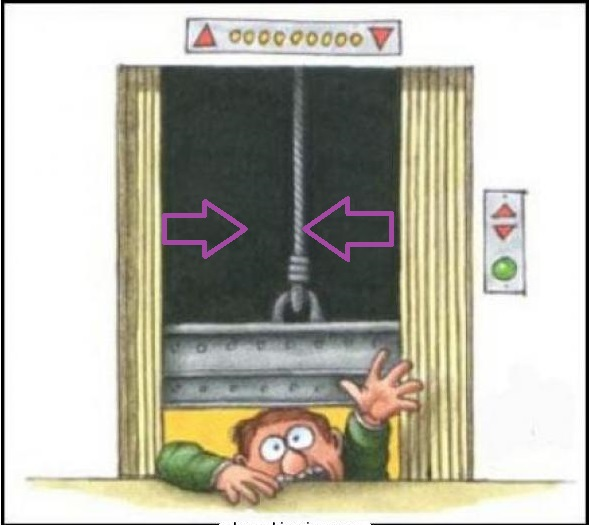

formula1 utilizada

El movimiento rectilíneo uniforme (m.r.u.), es aquel con velocidad
constante y cuya trayectoria es una línea recta. Un ejemplo claro
son las puertas correderas
de un ascensor, generalmente se abren
y cierran en línea recta y siempre a la misma velocidad.
ejemplo

ejemplo 2
Mario y luigi se mueven con MRU y van al encuentro. Calcular
el tiempo que emplean para encontrarse tomando en cuenta el gráfico.
ejemplo 3
un auto policia persigue a un dinosaurio. Si ambos avanzan
con MRU, Calcular el tiempo que emplea el auto en alcanzar al
dinosaurio, tomando en cuenta la gráfica.